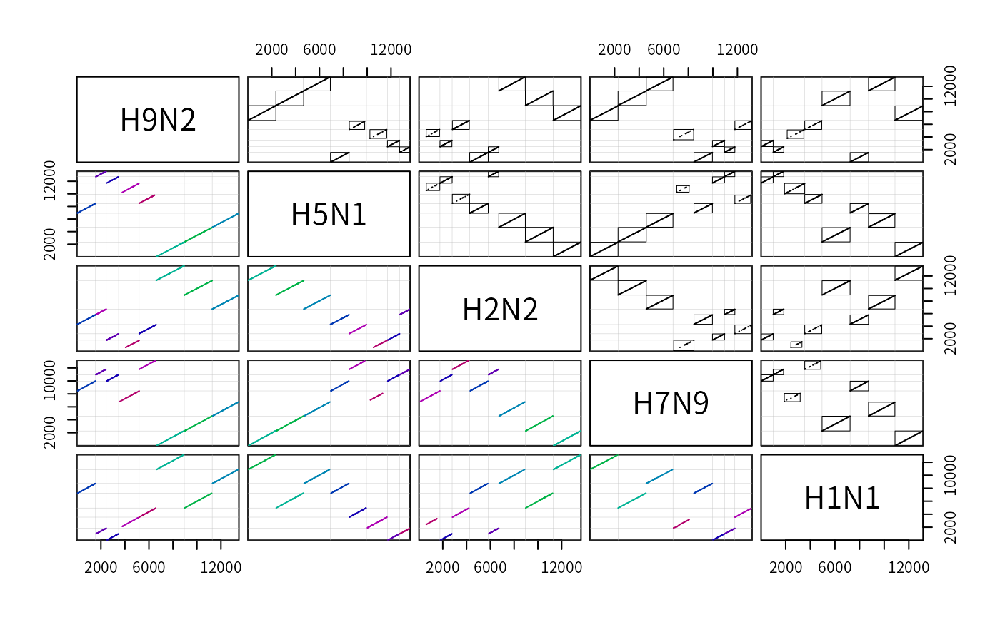

The Art of Multiple Sequence Alignment in R
Erik S. Wright
2023-08-24
ArtOfAlignmentInR.RmdIntroduction
This document is intended to illustrate the art of multiple sequence alignment in using DECIPHER. Even though its beauty is often concealed, multiple sequence alignment is a form of art in more ways than one. Take a look at Figure @ref(f1) for an illustration of what is happening behind the scenes during multiple sequence alignment. The practice of sequence alignment is one that requires a degree of skill, and it is that art which this vignette intends to convey. It is simply not enough to “plug” sequences into a multiple sequence aligner and blindly trust the result. An appreciation for the art as well a careful consideration of the results are required.
What really is multiple sequence alignment, and is there a single correct alignment? Generally speaking, alignment seeks to perform the act of taking multiple divergent biological sequences of the same “type” and fitting them to a form that reflects some shared quality. That quality may be how they look structurally, how they evolved from a common ancestor, or optimization of a mathematical construct. As with most multiple sequence aligners, DECIPHER is “trained” to maximize scoring metrics in order to accomplish a combination of both structural alignment and evolutionary alignment. The idea is to give the alignment a biological basis even though the molecules that the sequences represent will never meet each other and align under any natural circumstance.
The workhorse for sequence alignment in DECIPHER is
AlignProfiles, which takes in two aligned sets of DNA, RNA,
or amino acid (AA) sequences and returns a merged alignment. For more
than two sequences, the function AlignSeqs can be used to
perform multiple sequence alignment in a progressive/iterative manner on
sequences of the same kind. In this case, multiple alignment works by
aligning two sequences, merging with another sequence, merging with
another set of sequences, and so-forth until all the sequences are
aligned. This process is iterated to further refine the alignment. There
are other functions that extend use of AlignSeqs for
different purposes:
- The first is
AlignTranslation, which will align DNA/RNA sequences based on their amino acid translation and then reverse translate them back to DNA/RNA. Aligning protein sequences is more accurate since amino acids are more conserved than their corresponding coding sequence. - The second function,
AlignDB, enables generating alignments from many more sequences than are possible to fit in memory. Its main purpose is to merge sub-alignments where each alignment alone is composed of many thousands of sequences. This is accomplished by storing all of the aligned sequences in a database and only working with “profiles” representing the alignment. - The function
AdjustAlignmenttakes in an existing alignment and shifts groups of gaps right and left to achieve a better alignment. Its purpose is to eliminate artifacts that accumulate during progressive alignment, and to replace the tedious & subjective process of manually correcting an alignment. - Finally,
StaggerAlignmentwill create a “staggered” alignment by separating potentially non-homologous positions into separate columns. This function will help minimize false homologies when building a phylogenetic tree, although the resulting alignment is not as aesthetically pleasing. - The functions
FindSyntenyandAlignSyntenycan be used in combination to perform pairwise alignment of homologous regions from multiple genomes or non-collinear sequences. These functions interact with a sequence database containing the genomes, which can each be comprised of multiple sequences (i.e., scaffolds, contigs, or chromosomes).
Alignment Speed
The dynamic programming method used by DECIPHER for
aligning two profiles requires order N*M time and memory
space where N and M are the width of the
pattern and subject. Since multiple sequence alignment is an inherently
challenging problem for long sequences, heuristics are employed to
maximize speed while maintaining reasonable accuracy. In this regard,
the two control parameters available to the user are
restrict and anchor. The objective of the
restrict parameter is to convert the problem from one
taking quadratic time to linear time. The goal of the
anchor parameter is do the equivalent for memory space so
that very long sequences can be efficiently aligned.
The orange diagonal line in Figure @ref(f2) shows the optimal path
for aligning two sequence profiles. The blue segments to the left and
right of the optimal path give the constraint boundaries, which the user
controls with the restrict parameter. Areas above and below
the upper and lower (respectively) constraint boundaries are neglected
from further consideration. A higher (less negative) value of
restrict[1] will further constrain the possible “alignment
space,” which represents all possible alignments between two sequences.
Since the optimal path is not known till completion of the matrix, it is
risky to overly constrain the matrix. This is particularly true in
situations where the sequences are not mostly overlapping because the
optimal path will likely not be diagonal, causing the path to cross a
constraint boundary. In the non-overlapping case
restrict[1] could be set below the default to ensure that
the entire “alignment space” is available.
Neglecting the “corners” of the alignment space effectively converts
a quadratic time problem into a near-linear time problem. We can see
this by comparing AlignProfiles with and without
restricting the matrix at different sequence lengths. To extend our
comparison we can include the Biostrings function
pairwiseAlignment. In this simulation, two sequences with
90% identity are aligned and the elapsed time is recorded for a variety
of sequence lengths. As can be seen in Figure @ref(f3) below,
without restriction AlignProfiles takes quadratic
time in the same manner as pairwiseAlignment. However,
with restriction AlignProfiles takes linear time,
requiring far less than a microsecond per nucleotide.
The parameter anchor controls the fraction of sequences
that must share a common region to anchor the alignment space (Fig.
@ref(f2)). AlignProfiles will search for shared anchor
points between the two sequence sets being aligned, and if the fraction
shared is above anchor (70% by default) then that position
is fixed in the “alignment space.” Anchors are 15-mer (for DNA/RNA) or
7-mer (for AA) exact matches between two sequences that must occur in
the same order in both sequence profiles. Anchoring generally does not
affect accuracy, but can greatly diminish the amount of memory required
for alignment. In Fig. @ref(f2), the largest white box represents the
maximal memory space required with anchoring, while the entire alignment
space (grey plus white areas) would be required without anchoring. The
longest pair of sequence profiles that can be aligned without anchoring
is about 46 thousand nucleotides, as shown by the end of the red dotted
line in Figure @ref(f3). If regularly spaced anchor points are available
then the maximum sequence length is greatly extended. In the vast
majority of cases anchoring gives the same result as without anchoring,
but with less time and memory space required.
Alignment Accuracy
Figure @ref(f4) compares the performance of DECIPHER to other sequence alignment software on structural amino acid benchmarks [@Edgar:2010]. All benchmarks have flaws, some of which can easily be found by eye in highly similar sequence sets, and therefore benchmark results should treated with care [@Iantorno:2014]. As can be seen in the figure, the performance of DECIPHER is similar to that of other popular alignment software such as MAFFT [@Katoh:2002] and MUSCLE [@Edgar:2004] for smaller benchmarks. However, DECIPHER outperforms other programs on large sequence sets (Fig. @ref(f5)), and its relative advantage continues increase as more sequences are aligned [@Wright:2015]. Importantly, this is because DECIPHER exhibits far less fall-off in accuracy as additional sequences are added.
The accuracy of protein alignment begins to drop-off when sequences
in the reference alignment have less than 40% average pairwise identity
(Fig. @ref(f4)). A similar decline in performance is observed with
DNA/RNA sequences, but the drop-off occurs much earlier at around 60%
sequence identity. Therefore, it is generally preferable to align coding
sequences by their translation using AlignTranslation. This
function first translates the input DNA/RNA sequences, then aligns the
translation, and finally (conceptually) reverse translates the amino
acid sequences to obtain aligned DNA/RNA sequences. Nevertheless, even
protein alignment cannot be considered reliable when the sequences being
aligned differ by more than 70%.
Recommendations for optimal performance
DECIPHER has a number of alignment functions and associated parameters. The flow-chart in Figure @ref(f6) is intended to simplify this process for the most frequently encountered multiple sequence alignment tasks. For more information on any of these suggestions, refer to the examples in the following sections of this vignette.
Single Gene Alignment
Example: Protein coding sequences
For this example we are going to align the rplB coding sequence from many different Bacteria. The rplB gene encodes one of the primary ribosomal RNA binding proteins: the 50S ribosomal protein L2. We begin by loading the library and importing the sequences from a FASTA file. Be sure to change the path names to those on your system by replacing all of the text inside quotes labeled “\(<<\)path to …\(>>\)” with the actual path on your system.
library(DECIPHER)
# specify the path to your sequence file:
fas <- "<<path to FASTA file>>"
# OR find the example sequence file used in this tutorial:
fas <- system.file("extdata", "50S_ribosomal_protein_L2.fas", package="DECIPHER")
dna <- readDNAStringSet(fas)
dna # the unaligned sequences## DNAStringSet object of length 317:
## width seq names
## [1] 819 ATGGCTTTAAAAAATTTTAATC...ATTTATTGTAAAAAAAAGAAAA Rickettsia prowaz...
## [2] 822 ATGGGAATACGTAAACTCAAGC...CATCATTGAGAGAAGGAAAAAG Porphyromonas gin...
## [3] 822 ATGGGAATACGTAAACTCAAGC...CATCATTGAGAGAAGGAAAAAG Porphyromonas gin...
## [4] 822 ATGGGAATACGTAAACTCAAGC...CATCATTGAGAGAAGGAAAAAG Porphyromonas gin...
## [5] 819 ATGGCTATCGTTAAATGTAAGC...CATCGTACGTCGTCGTGGTAAA Pasteurella multo...
## ... ... ...
## [313] 819 ATGGCAATTGTTAAATGTAAAC...TATCGTACGTCGCCGTACTAAA Pectobacterium at...
## [314] 822 ATGCCTATTCAAAAATGCAAAC...TATTCGCGATCGTCGCGTCAAG Acinetobacter sp....
## [315] 864 ATGGGCATTCGCGTTTACCGAC...GGGTCGCGGTGGTCGTCAGTCT Thermosynechococc...
## [316] 831 ATGGCACTGAAGACATTCAATC...AAGCCGCCACAAGCGGAAGAAG Bradyrhizobium ja...
## [317] 840 ATGGGCATTCGCAAATATCGAC...CAAGACGGCTTCCGGGCGAGGT Gloeobacter viola...We can align the DNA by either aligning the coding sequences
directly, or their translations (amino acid sequences). Both methods
result in an aligned set of DNA sequences, unless the argument
type is "AAStringSet" in
AlignTranslation. A quick inspection reveals that the
method of translating before alignment yields a more appealing result.
In particular, the reading frame is maintained when aligning the
translations. However, if the dna did not code for a protein then the
only option would be to use AlignSeqs because the
translation would be meaningless.
AA <- AlignTranslation(dna, type="AAStringSet") # align the translation
BrowseSeqs(AA, highlight=1) # view the alignment
DNA <- AlignSeqs(dna) # align the sequences directly without translation
DNA <- AlignTranslation(dna) # align the translation then reverse translate
# write the aligned sequences to a FASTA file
writeXStringSet(DNA, file="<<path to output file>>")Note that frameshift errors can greatly disrupt the alignment of
protein coding sequences. Frameshifts can be corrected by first using
CorrectFrameshifts on the nucleotide sequences, and then
using the corrected sequences as input to AlignTranslation
with the argument readingFrame equal to 1.
If the input sequences include exact replicates, then alignment can
be accelerated by de-replicating the sequences before alignment. The
sequences can then be re-replicated after alignment to create a larger
alignment of all the original sequences. AlignSeqs does not
automatically handle redundancy in the input sequences, but doing so is
fairly straightforward. In this case there aren’t any exact duplicates
in the example dna sequences. Nonetheless, the process to
de-replicate before alignment and re-replicate after alignment would
look like:
u_dna <- unique(dna) # the unique input sequences
index <- match(dna, u_dna) # de-replication index
U_DNA <- AlignSeqs(u_dna) # align the sequences directly without translation
DNA <- U_DNA[index]
names(DNA) <- names(dna) # the re-replicated alignmentAlso, when aligning nucleotide sequences (or their translations), it
may be the case that the sequences are in different orientations. If so,
consider reorienting the sequences so that they all have the same
directionality and complementarity by using
OrientNucleotides prior to alignment.
Example: Non-coding RNA sequences
Much like proteins, non-coding RNAs often have a conserved secondary
structure that can be used to improve their alignment. The
PredictDBN function will predict base pairings from a
sequence alignment by calculating the mutual information between pairs
of positions. If RNA sequences are given as input,
AlignSeqs will automatically use the output of
PredictDBN to iteratively improve the alignment. Providing
an RNAStringSet also causes single-base and double-base
substitution matrices to be used, and is preferable to providing a
DNAStringSet when the sequences are non-coding RNA. The type of
the input sequences can easily be converted to RNA, as shown below.
# database containing 16S ribosomal RNA sequences
db <- system.file("extdata", "Bacteria_175seqs.sqlite", package="DECIPHER")
rna <- SearchDB(db, remove="all", type="RNAStringSet")
# or if starting with DNA sequences, convert to RNA with:
# rna <- RNAStringSet(dna)
# or import RNA sequences directly using:
# rna <- readRNAStringSet("<<path to FASTA file>>")
alignedRNA <- AlignSeqs(rna) # align with RNA secondary structureExample: Aligning two aligned sequence sets
It is sometimes useful to align two or more previously-aligned sets
of sequences. Here we can use the function AlignProfiles to
directly align profiles of the two sequence sets:
half <- floor(length(dna)/2)
dna1 <- dna[1:half] # first half
dna2 <- dna[(half + 1):length(dna)] # second half
AA1 <- AlignTranslation(dna1, type="AAStringSet")
AA2 <- AlignTranslation(dna2, type="AAStringSet")
AA <- AlignProfiles(AA1, AA2) # align two alignmentsWhen the two sequence sets are very large it may be impossible to fit
both sets of input sequences and the output alignment into memory at
once. The function AlignDB can align the sequences in two
database tables, or two sets of sequences corresponding to separate
identifiers in the same table. AlignDB takes as input two
tblNames and/or identifiers, and iteratively builds a profile for each
of those respective sequence alignments in the database. These profiles
are aligned, and the insertions are iteratively applied to each of the
input sequences until the completed alignment has been stored in
add2tbl.
# Align DNA sequences stored in separate tables:
dbConn <- dbConnect(SQLite(), ":memory:")
Seqs2DB(AA1, "DNAStringSet", dbConn, "AA1", tblName="AA1")
Seqs2DB(AA2, "DNAStringSet", dbConn, "AA2", tblName="AA2")
AlignDB(dbConn, tblName=c("AA1", "AA2"), add2tbl="AA",
type="AAStringSet")
AA <- SearchDB(dbConn, tblName="AA", type="AAStringSet")
BrowseDB(dbConn, tblName="AA")
dbDisconnect(dbConn)The number of sequences required to fit into memory when aligning two
sequence sets with AlignDB is controlled by the batchSize
parameter. In this way AlignDB can be used to align large
sequence alignments with only minimal memory required.
Advanced Options & Features
Example: Building a Guide Tree
The AlignSeqs function uses a guide tree to decide the
order in which to align pairs of sequence profiles. The
guideTree input is a dendrogram (tree) object with
one leaf per input sequence. By default this guide tree is generated
directly from the input sequences using the order of shared k-mers
(i.e., when the argument guideTree is NULL).
This default guide tree performs very well but requires \(\mathcal{O}(n^2)\) time and memory space to
construct. Therefore, it may be useful to rely on a chained guide tree
when aligning hundreds of thousands of unique sequences.
It has been shown that reasonably accurate alignments of tens of thousands of sequences can be obtained by using a chain guide tree [@Boyce:2014]. With a chained guide tree, sequences are added one-by-one to a growing profile representing all of the aligned sequences. Figure @ref(f7) shows the result of using DECIPHER to align increasing numbers of Cytochrome P450 sequences (in accordance with the method in reference [@Boyce:2014]), using either a chained guide tree or the default guide tree. A chained guide tree can be easily generated, as shown below.
# form a chained guide tree
gT <- lapply(order(width(dna), decreasing=TRUE),
function(x) {
attr(x, "height") <- 0
attr(x, "label") <- names(dna)[x]
attr(x, "members") <- 1L
attr(x, "leaf") <- TRUE
x
})
attr(gT, "height") <- 0.5
attr(gT, "members") <- length(dna)
class(gT) <- "dendrogram"
# use the guide tree as input for alignment
DNA <- AlignTranslation(dna,
guideTree=gT,
iterations=0,
refinements=0)It is also possible to read a Newick formatted tree into using the
function ReadDendrogram, and specify this object as the
input guideTree.
Example: Post-processing an existing multiple alignment
There are several steps that can be taken after alignment to verify
or improve the alignment. The most important step is to look at the
result to ensure that it meets expectations. Spurious (unalignable)
sequences can then be removed and the alignment process repeated as
desired. The simplest way to view sequences with
DECIPHER is by using the function
BrowseSeqs. The highlight parameter controls
which sequence, if any, is in focus (highlighted). A value of zero
highlights the consensus sequence as shown below.
BrowseSeqs(DNA, highlight=0)All DECIPHER multiple sequence alignments are
optimized using AdjustAlignment (unless the input argument
FUN is changed), with the goal of removing artifacts of the
progressive alignment process. This function will efficiently correct
most obvious inaccuracies that could be found by-eye. Therefore, making
manual corrections is not recommended unless additional expert knowledge
of the sequences is available. The advantage of using
AdjustAlignment is that it is a repeatable process that is
not subjective, unlike most manual adjustments. In order to further
refine an existing alignment, AdjustAlignment can be called
directly.
DNA_adjusted <- AdjustAlignment(DNA)It is common to use alignment as a preliminary step before the creation of a phylogenetic tree. DECIPHER, like the majority of alignment programs, attempts to maximize homologous positions between the sequences being aligned. Such an alignment is particularly useful when investigating which residues are in the same structural position of a protein. However, disparate sequence regions tend to be concentrated into the same “gappy” areas of the alignment. When viewed from a phylogenetic perspective these homologies have highly implausible insertion/deletion scenarios.
To mitigate the problem of false homologies,
StaggerAlignment will automatically generate a staggered
version of an existing alignment. Staggered alignments separate
potentially non-homologous regions into separate columns of the
alignment. The result is an alignment that is less visually appealing,
but likely more accurate from a phylogenetic perspective.
DNA_staggered <- StaggerAlignment(DNA)Aligning Homologous Regions of Multiple Genomes
The functions described so far have all required collinear sequences
as input. This requirement is frequently broken by genomes, which may
include many sequence rearrangements such as inversion, duplication, and
reordering. FindSynteny will find homologous regions
between pairs of genomes, which can then be aligned using
AlignSynteny. A database of sequences identified by their
genome name is used as input to both functions. This enables the
alignment of genomes that are composed of many contigs, so long as they
all share the same identifier in the database. The example
below uses a database containing five Influenza virus A
genomes, which are each composed of eight separate segments.
db <- system.file("extdata", "Influenza.sqlite", package="DECIPHER")
synteny <- FindSynteny(db, verbose=FALSE)
synteny # an object of class `Synteny`## H9N2 H5N1 H2N2 H7N9 H1N1
## H9N2 8 seqs 74% hits 78% hits 76% hits 73% hits
## H5N1 8 blocks 8 seqs 70% hits 74% hits 84% hits
## H2N2 8 blocks 8 blocks 8 seqs 73% hits 71% hits
## H7N9 8 blocks 8 blocks 8 blocks 8 seqs 74% hits
## H1N1 8 blocks 8 blocks 8 blocks 8 blocks 8 seqs
InfluenzaA <- AlignSynteny(synteny, db, verbose=FALSE)
unlist(InfluenzaA[[1]])## DNAStringSet object of length 16:
## width seq names
## [1] 2328 GCAAAAGCAGGCAAACCATTTGA...CTTGTCCTTCATGAAAAAATGC 1.H9N2
## [2] 2328 GCAAAAGCAGGCAAACCATTTGA...CTTGTCCTTCATGAAAAAATGC 1.H5N1
## [3] 2339 CAAAAGCAGGTCAATTATATTCA...TAAAAACGACCTTGTTTCTACT 2.H9N2
## [4] 2339 CAAAAGCAGGTCAATTATATTCA...TAAAAACGACCTTGTTTCTACT 2.H5N1
## [5] 2225 AAAGCAGGTACTGATCCAAAATG...GTCCAAAAAAGTACCTTGTTTC 3.H9N2
## ... ... ...
## [12] 865 GTGACAAAGACATAATGGATTCC...CTTATTTAATACTAAAAAACAC 6.H5N1
## [13] 1453 GAATGGTCCTACATCGTCGAAAG...TCTGGGCCATGTCCAATGGATC 7.H9N2
## [14] 1453 GAATGGTCTTACATAGTGGAGAA...TATGGATGTGCTCCAATGGATC 7.H5N1
## [15] 1317 ATGAATCCAAATCAAAAGATAAT...GGAGTTGATAAGAGGGAGACCA 8.H9N2
## [16] 1317 ATGAATCCAAATCAGAAGATAAT...TGAGCTAATCAGAGGGCGGCCC 8.H5N1The output is a list, with each list component containing a
DNAStringSetList of pairwise alignments between two
genomes. Names of the output correspond to their sequence’s
identifier in the database, and the index of the syntenic
block.
It is also possible to display the blocks of synteny between all pairs of genomes. Figure @ref(f8) shows the different genome segments (i.e., sequences) separated by thin horizontal and vertical lines. The syntenic blocks are diagonal lines that are composed of many homologous “hits” between the genomes.
pairs(synteny, boxBlocks=TRUE) # scatterplot matrix
{#f8} Dot plots showing the homologous regions among five Influenza virus A genomes.
Session Information
All of the output in this vignette was produced under the following conditions:
## R version 4.3.1 (2023-06-16)
## Platform: x86_64-pc-linux-gnu (64-bit)
## Running under: Ubuntu 22.04.3 LTS
##
## Matrix products: default
## BLAS: /usr/lib/x86_64-linux-gnu/blas/libblas.so.3.10.0
## LAPACK: /usr/lib/x86_64-linux-gnu/lapack/liblapack.so.3.10.0
##
## locale:
## [1] LC_CTYPE=zh_CN.UTF-8 LC_NUMERIC=C
## [3] LC_TIME=zh_CN.UTF-8 LC_COLLATE=zh_CN.UTF-8
## [5] LC_MONETARY=zh_CN.UTF-8 LC_MESSAGES=zh_CN.UTF-8
## [7] LC_PAPER=zh_CN.UTF-8 LC_NAME=C
## [9] LC_ADDRESS=C LC_TELEPHONE=C
## [11] LC_MEASUREMENT=zh_CN.UTF-8 LC_IDENTIFICATION=C
##
## time zone: Asia/Shanghai
## tzcode source: system (glibc)
##
## attached base packages:
## [1] parallel stats4 stats graphics grDevices utils datasets
## [8] methods base
##
## other attached packages:
## [1] DECIPHER_2.29.1 RSQLite_2.3.1 Biostrings_2.68.1
## [4] GenomeInfoDb_1.36.1 XVector_0.40.0 IRanges_2.34.1
## [7] S4Vectors_0.38.1 BiocGenerics_0.46.0
##
## loaded via a namespace (and not attached):
## [1] bit_4.0.5 jsonlite_1.8.7 highr_0.10
## [4] crayon_1.5.2 compiler_4.3.1 blob_1.2.4
## [7] stringr_1.5.0 bitops_1.0-7 jquerylib_0.1.4
## [10] systemfonts_1.0.4 textshaping_0.3.6 yaml_2.3.7
## [13] fastmap_1.1.1 R6_2.5.1 knitr_1.43
## [16] desc_1.4.2 rprojroot_2.0.3 DBI_1.1.3
## [19] GenomeInfoDbData_1.2.10 bslib_0.5.1 rlang_1.1.1
## [22] cachem_1.0.8 stringi_1.7.12 xfun_0.40
## [25] fs_1.6.3 sass_0.4.7 bit64_4.0.5
## [28] memoise_2.0.1 cli_3.6.1 pkgdown_2.0.7
## [31] magrittr_2.0.3 zlibbioc_1.46.0 digest_0.6.33
## [34] rstudioapi_0.15.0 lifecycle_1.0.3 vctrs_0.6.3
## [37] evaluate_0.21 glue_1.6.2 ragg_1.2.5
## [40] RCurl_1.98-1.12 rmarkdown_2.24 purrr_1.0.2
## [43] pkgconfig_2.0.3 tools_4.3.1 htmltools_0.5.6